Chapter 4 Geometric morphometrics - temporal
4.1 Load packages + data
# load analysis packages
library(here)
library(StereoMorph)
library(geomorph)
library(ggplot2)
library(dplyr)
library(wesanderson)
# read shape data and define number of sLMs
shapes <- readShapes("shapes-temporal")
shapesGM <- readland.shapes(shapes, nCurvePts = c(10,3,5,5,3,10))
# read qualitative data
qdata <- read.csv("qdata-temporal.csv",
header = TRUE,
row.names = 1)4.2 Temporal attributes
# temporal attributes
pal <- wes_palette("Moonrise2", 5, type = "continuous")
# gantt chart of relative dates for perdiz arrow points
temp<-data.frame(Site = c('41CP5, Tuck Carpenter','41CP12, Johns','41CP20, BJ Horton','41NA49, Washington Square Mound', '41SY27, Morse Mound'),
Date_Range_CE = c(1430,1430,1500,1238,1456), # in years CE
end = c(1500,1600,1550,1445,1488) # in years CE
)
# reorder types by beginning of relative date range
temp$Site <- factor(temp$Site, levels = temp$Site[order(temp$Date_Range_CE)])
# arrange figure
type.time <- ggplot(temp,
aes(x = Date_Range_CE,
xend = end,
y = factor(Site,
levels = rev(levels(factor(Site)))),
yend = Site,
color = Site)) +
geom_segment(size = 2.5) +
scale_colour_manual(values = pal) +
theme(legend.position = "none") +
labs(y = "Site", x = "Date Range CE")
# render figure
type.time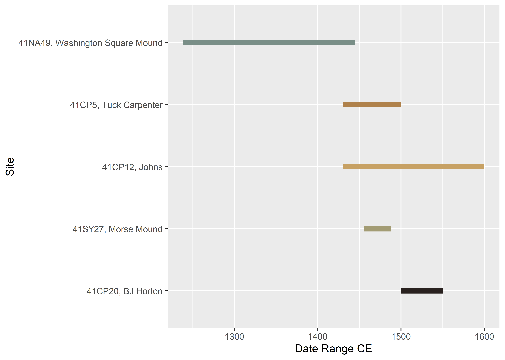
4.3 Generalised Procrustes Analysis
# gpa
Y.gpa <- gpagen(shapesGM, print.progress = FALSE)
## plot
plot(Y.gpa)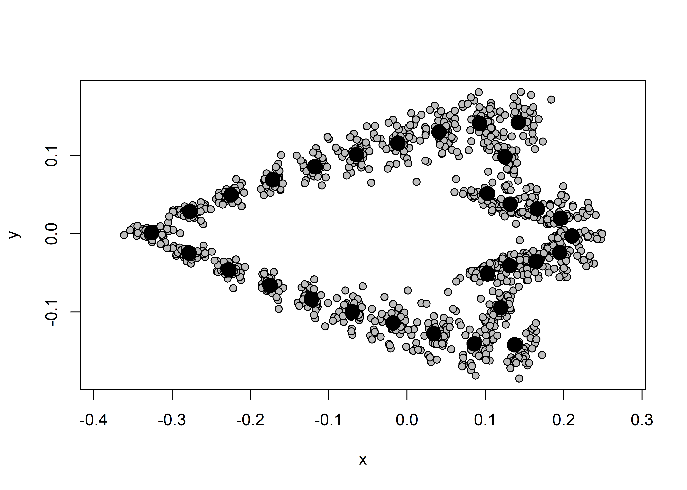
# dataframe
gdf <- geomorph.data.frame(shape = Y.gpa$coords,
size = Y.gpa$Csize,
site = qdata$site)
# add centroid size to qdata
qdata$csz <- Y.gpa$Csize4.4 Boxplot (centroid size)
# attributes
csz <- qdata$csz
site <- qdata$site
# palette
pal = wes_palette("Moonrise2")
# boxplot of Perdiz arrow points by site
csz.temp <- ggplot(qdata, aes(x = site, y = csz, color = site)) +
geom_boxplot() +
geom_dotplot(binaxis = 'y', stackdir = 'center', dotsize = 0.3) +
scale_color_manual(values = pal) +
theme(legend.position = "none") +
labs(x = 'Site', y = 'Centroid Size')
## render plot
csz.temp## Bin width defaults to 1/30 of the range of the data. Pick better value with `binwidth`.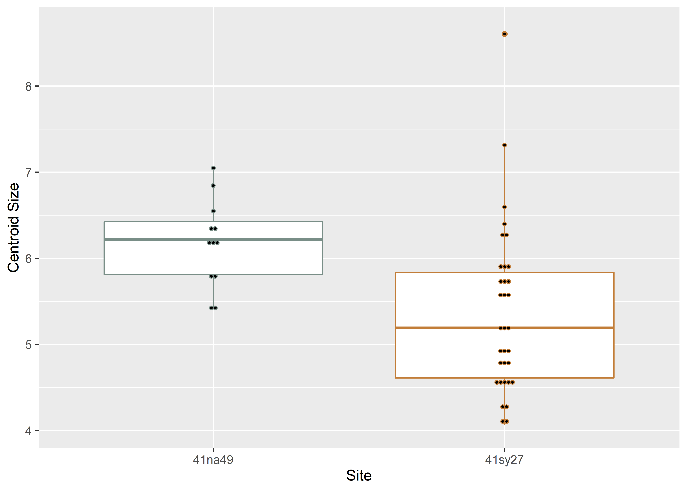
4.5 Principal Components Analysis
# pca
pca <- gm.prcomp(Y.gpa$coords)
summary(pca)##
## Ordination type: Principal Component Analysis
## Centering by OLS mean
## Orthogonal projection of OLS residuals
## Number of observations: 45
## Number of vectors 44
##
## Importance of Components:
## Comp1 Comp2 Comp3 Comp4 Comp5 Comp6 Comp7
## Eigenvalues 0.006613596 0.004231491 0.001089495 0.0002615032 0.0002062667 0.0001120225 0.0000870906
## Proportion of Variance 0.514891550 0.329436344 0.084820998 0.0203589340 0.0160585785 0.0087213458 0.0067803069
## Cumulative Proportion 0.514891550 0.844327894 0.929148891 0.9495078252 0.9655664037 0.9742877495 0.9810680564
## Comp8 Comp9 Comp10 Comp11 Comp12 Comp13
## Eigenvalues 4.752568e-05 3.788399e-05 3.355649e-05 0.0000235472 2.119594e-05 1.709099e-05
## Proportion of Variance 3.700040e-03 2.949401e-03 2.612490e-03 0.0018332317 1.650178e-03 1.330593e-03
## Cumulative Proportion 9.847681e-01 9.877175e-01 9.903300e-01 0.9921632195 9.938134e-01 9.951440e-01
## Comp14 Comp15 Comp16 Comp17 Comp18 Comp19
## Eigenvalues 1.326943e-05 8.093995e-06 7.607390e-06 6.720718e-06 5.582739e-06 4.701020e-06
## Proportion of Variance 1.033072e-03 6.301457e-04 5.922618e-04 5.232313e-04 4.346357e-04 3.659908e-04
## Cumulative Proportion 9.961771e-01 9.968072e-01 9.973995e-01 9.979227e-01 9.983573e-01 9.987233e-01
## Comp20 Comp21 Comp22 Comp23 Comp24 Comp25
## Eigenvalues 3.205645e-06 2.331217e-06 2.280116e-06 1.468841e-06 1.355222e-06 1.085941e-06
## Proportion of Variance 2.495706e-04 1.814934e-04 1.775149e-04 1.143544e-04 1.055087e-04 8.454428e-05
## Cumulative Proportion 9.989729e-01 9.991544e-01 9.993319e-01 9.994463e-01 9.995518e-01 9.996363e-01
## Comp26 Comp27 Comp28 Comp29 Comp30 Comp31
## Eigenvalues 9.458067e-07 8.808713e-07 6.055405e-07 5.095181e-07 4.428510e-07 3.356134e-07
## Proportion of Variance 7.363435e-05 6.857890e-05 4.714344e-05 3.966776e-05 3.447750e-05 2.612867e-05
## Cumulative Proportion 9.997099e-01 9.997785e-01 9.998257e-01 9.998653e-01 9.998998e-01 9.999259e-01
## Comp32 Comp33 Comp34 Comp35 Comp36 Comp37
## Eigenvalues 2.228811e-07 1.768754e-07 1.278682e-07 1.130090e-07 9.761194e-08 8.030144e-08
## Proportion of Variance 1.735207e-05 1.377037e-05 9.954984e-06 8.798146e-06 7.599430e-06 6.251747e-06
## Cumulative Proportion 9.999433e-01 9.999571e-01 9.999670e-01 9.999758e-01 9.999834e-01 9.999897e-01
## Comp38 Comp39 Comp40 Comp41 Comp42 Comp43
## Eigenvalues 6.547616e-08 3.156706e-08 1.634746e-08 8.465281e-09 5.684154e-09 3.672817e-09
## Proportion of Variance 5.097547e-06 2.457605e-06 1.272707e-06 6.590517e-07 4.425312e-07 2.859416e-07
## Cumulative Proportion 9.999948e-01 9.999972e-01 9.999985e-01 9.999992e-01 9.999996e-01 9.999999e-01
## Comp44
## Eigenvalues 1.451807e-09
## Proportion of Variance 1.130282e-07
## Cumulative Proportion 1.000000e+00# set plot parameters
pch.gps <- c(15,17)[as.factor(site)]
col.gps <- pal[as.factor(site)]
col.hull <- c("#798E87", "#C27D38")
## pca plot
pc.plot <- plot(pca,
asp = 1,
pch = pch.gps,
col = col.gps)
shapeHulls(pc.plot,
groups = site,
group.cols = col.hull)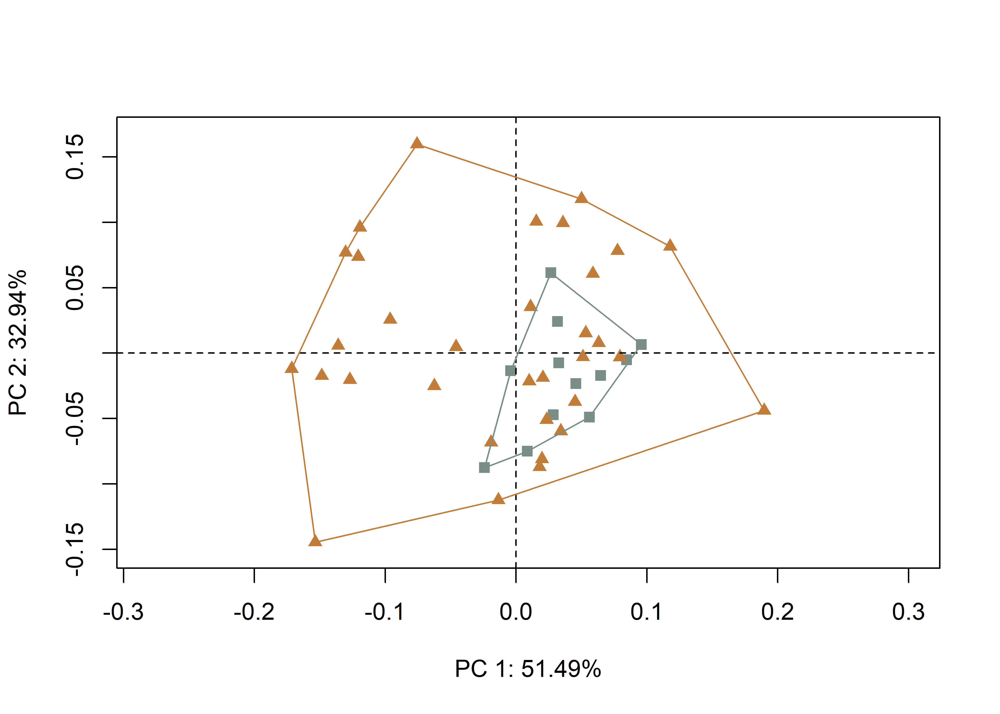
4.5.1 Minima/maxima of PC1/2 with warp grids
# plot x/y maxima/minima
## x - minima
mean.shape <- mshape(Y.gpa$coords)
plotRefToTarget(pca$shapes$shapes.comp1$min,
mean.shape)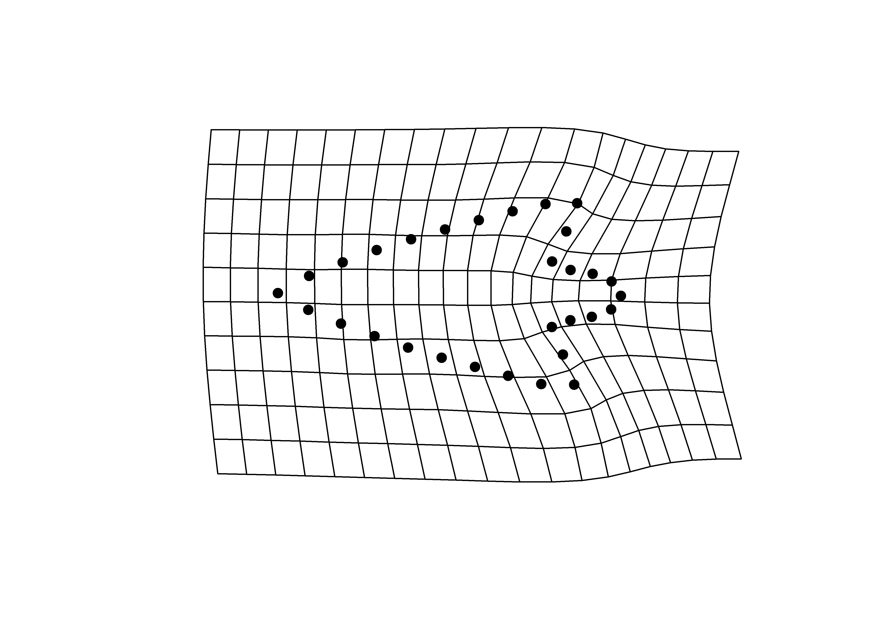
## x - maxima
plotRefToTarget(pca$shapes$shapes.comp1$max,
mean.shape)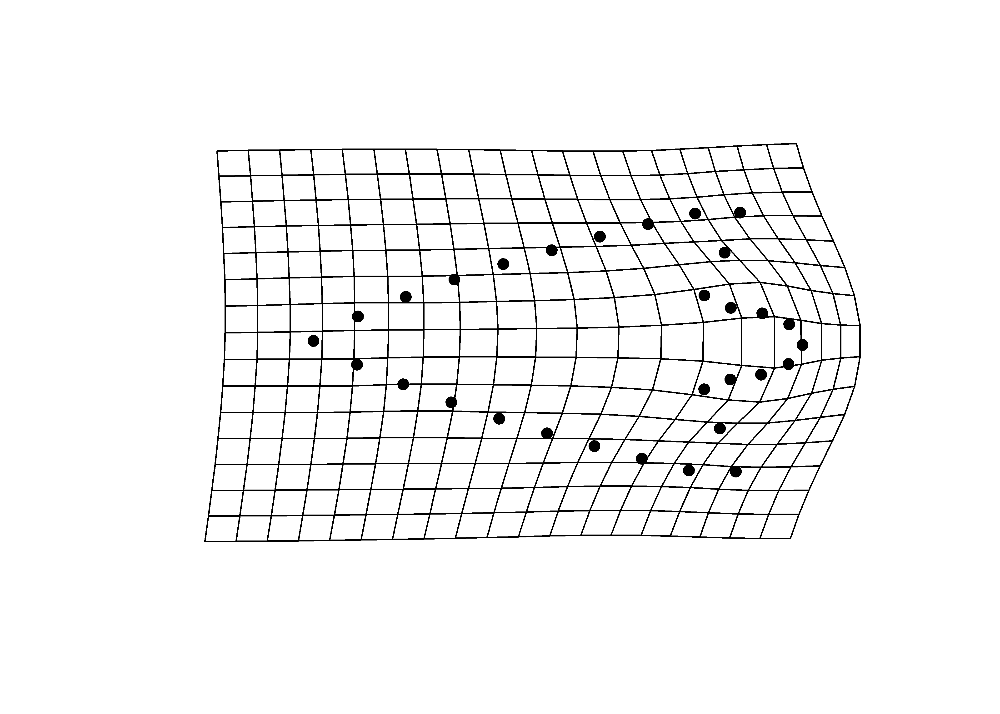
## y - minima
plotRefToTarget(pca$shapes$shapes.comp2$min,
mean.shape)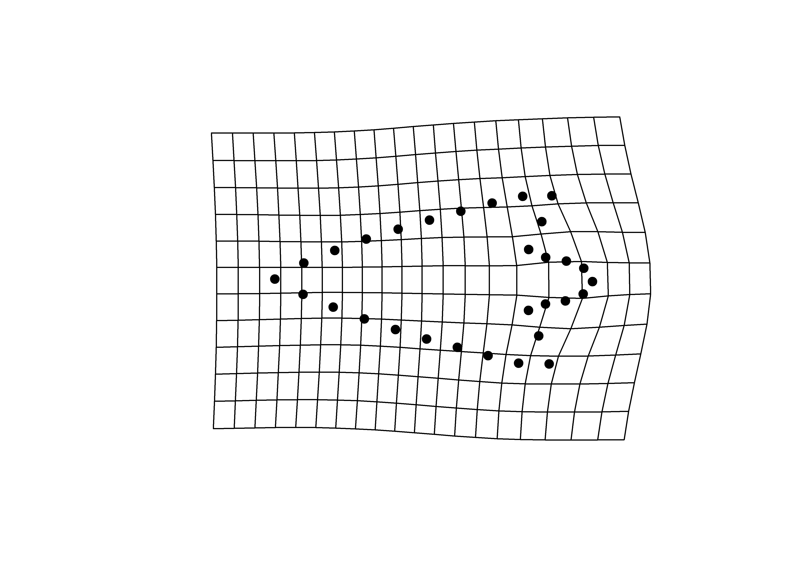
## y - maxima
plotRefToTarget(pca$shapes$shapes.comp2$max,
mean.shape)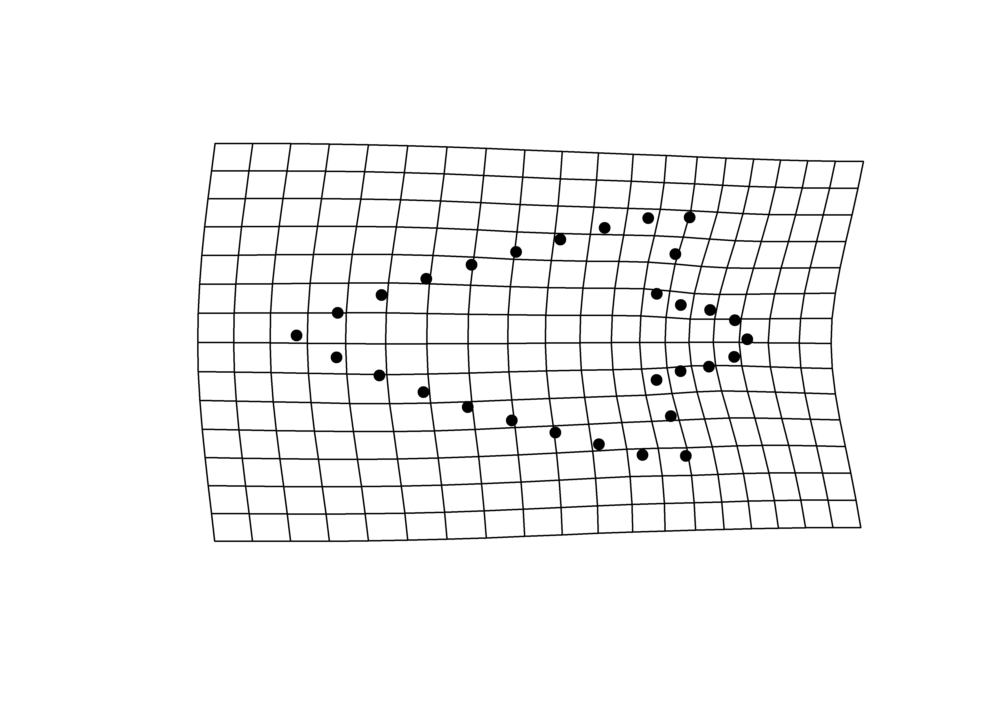
4.6 Procrustes ANOVA: Shape and size
# shape
fit.sh.reg <- procD.lm(shape ~ site,
data = gdf,
print.progress = FALSE,
iter = 9999)
# shape
anova(fit.sh.reg)##
## Analysis of Variance, using Residual Randomization
## Permutation procedure: Randomization of null model residuals
## Number of permutations: 10000
## Estimation method: Ordinary Least Squares
## Sums of Squares and Cross-products: Type I
## Effect sizes (Z) based on F distributions
##
## Df SS MS Rsq F Z Pr(>F)
## site 1 0.03169 0.031686 0.05607 2.554 1.5148 0.0671 .
## Residuals 43 0.53348 0.012406 0.94393
## Total 44 0.56516
## ---
## Signif. codes: 0 '***' 0.001 '**' 0.01 '*' 0.05 '.' 0.1 ' ' 1
##
## Call: procD.lm(f1 = shape ~ site, iter = 9999, data = gdf, print.progress = FALSE)# size
fit.sz.reg <- procD.lm(size ~ site,
data = gdf,
print.progress = FALSE,
iter = 9999)
# size
anova(fit.sz.reg)##
## Analysis of Variance, using Residual Randomization
## Permutation procedure: Randomization of null model residuals
## Number of permutations: 10000
## Estimation method: Ordinary Least Squares
## Sums of Squares and Cross-products: Type I
## Effect sizes (Z) based on F distributions
##
## Df SS MS Rsq F Z Pr(>F)
## site 1 5.674 5.6736 0.14526 7.3078 2.1529 0.0086 **
## Residuals 43 33.384 0.7764 0.85474
## Total 44 39.058
## ---
## Signif. codes: 0 '***' 0.001 '**' 0.01 '*' 0.05 '.' 0.1 ' ' 1
##
## Call: procD.lm(f1 = size ~ site, iter = 9999, data = gdf, print.progress = FALSE)4.7 Mean shapes
# subset landmark coordinates to produce mean shapes
new.coords <- coords.subset(A = Y.gpa$coords,
group = qdata$site)
names(new.coords)## [1] "41na49" "41sy27"# group shape means
mean <- lapply(new.coords, mshape)
## plot mean shape 41na49
plot(mean$`41na49`)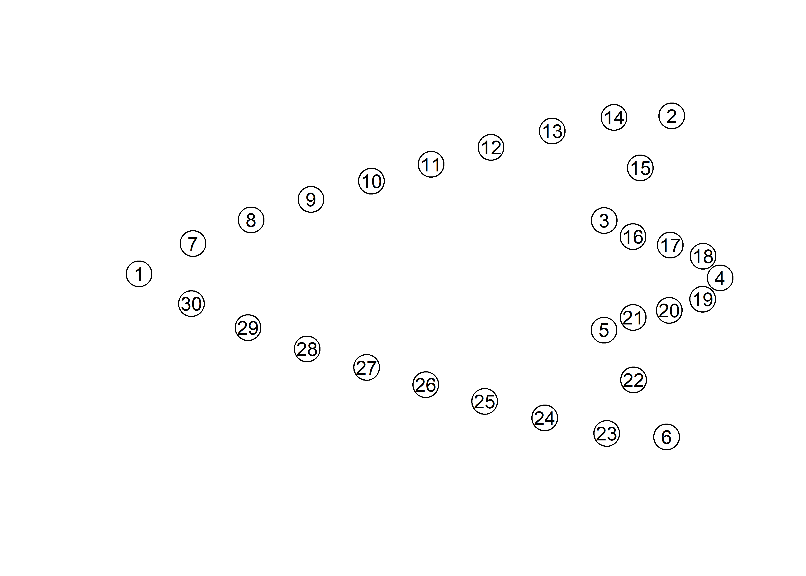
## plot mean shape 41sy27
plot(mean$`41sy27`)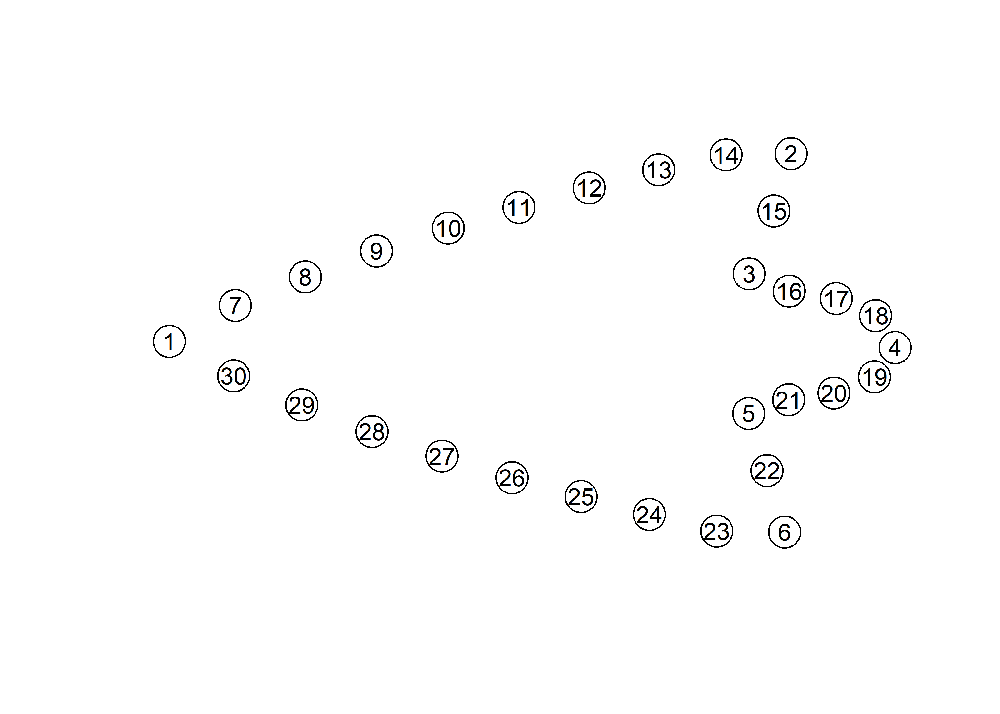
## comparison plot
plotRefToTarget(mean$`41na49`,
mean$`41sy27`,
method = "points",
mag = 1,
useRefPts = TRUE)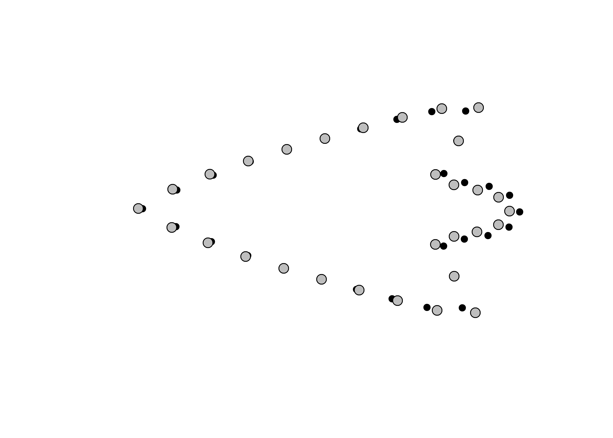